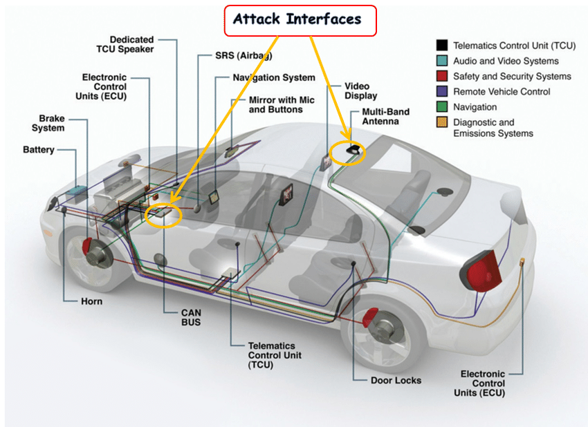

Bevezetés az autóelektronikába
Ez a weboldal a bevezetés az autóelektronikába kurzus leírását tartalmazza.
A kurzus során tanultak
- A gépkocsi villamos rendszere
- Akkumulátorok
- Generátor
- Indítómotor és hibrid hajtások
- Villamos gyújtás, izzítógyertya
- Benzin befecskendezés
- Diesel befecskendezés
- Kipufugógáz kezelés
- Automata sebességváltók
- Biztonsági rendszerek
- Gépjármű világítás
- Fedélzeti diagnosztika